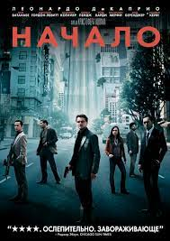

Топ-3 фильмов: "Начало" | "Джентельмены" | "Джон Уик"
Кликни сюда!
Режисер: Кристофер Нолан
Жанр:Фантастика, Боевики, Триллеры
Список основных Актеров:
| Сюжет | Фильм: "Начало" | Технология проникновения в сны открыла новые возможности для промышленного шпионажа. Специалист в этой области Доминик Кобб получает сложный заказ: не просто выведать секрет у сына энергетического магната, а внушить ему мысль, которая разрушит империю, созданную отцом. В награду с Кобба будут сняты обвинения в убийстве жены, и он сможет вернуться в США, где остались его дети. Коббу нужны помощники, потому что уже долгое время он не может контролировать действительность снов, поскольку в них постоянно появляется его погибшая жена Мол. Начинается процесс подготовки. В проекте участвуют: заказчик Сайто, архитектор реальности снов Ариадна, фармацевт Юсуф, имитатор Имс и сам Кобб. На борту частного самолета им удается погрузить Роберта Фишера в сон, но он знает, как противостоять шпионажу, поэтому, чтобы добиться результата, нужно использовать три уровня сна. Опасность в том, что если в сон уходить при помощи снотворного, после смерти во сне в реальность уже не вернуться. Команде Кобба удается убедить Фишера, что некие похитители пытаются выведать у него код от сейфа. Кобб входит в доверие к Фишеру и уводит его во второй сон, где предлагает ответить «заказчику» похищения контрударом, проникнув в его сон. Фишер соглашается. Но в третьем сне появляется Мол. Она убивает Фишера. Единственный способ спасти его – это войти в лимб. В лимбе Кобб рассказывает историю, как в действительности погибла Мол: они вместе провели какое-то время в лимбе, и Мол не хотела оттуда уходить, считая эту реальность более приемлемой для себя. Кобб внушением вынудил ее вернуться, но Мол не вынесла реальности и покончила с собой, а его обвинили в убийстве. Кобб находит Фишера и возвращает его на третий уровень, где тот после разговора с проекцией своего отца принимает решение, ради которого было затеяно внедрение. Команда Кобба устраивает трехуровневый выброс в реальность. Кобб получает возможность вернуться в Штаты, но финал фильма остается открытым: сделал он это в реальности или во сне. |